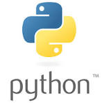
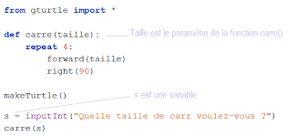

Narrateur :
Bienvenue dans "30 jours pour apprendre à programmer en Python".Aujourd'hui, nous allons découvrir comment utiliser les variables.
Une variable est comparable à une boîte de stockage identifiée par un nom unique.
Règles importantes :
Utiliser des lettres (a-z, A-Z), des chiffres et des tirests bas(_).
ATTENTION: Python est sensible à la casse (majiscules ≠ miniscules).
Un nom de variable ne doit jamais commencer par un chiffre.
Évitez les mots réservés du langage.
Podcast : Variables en Python
Transcription de podcast :
Camille
Bienvenue à tous! Aujourd'hui, nous allons plonger dans le monde fascinant de Python, et notre sujet est, *roulement de tambour*, les variables!
Louis
Oh! Les variables... Qu'est-ce que c'est exactement? Je veux dire, un nom qui ressemble à quelque chose que l'on utilise pour, je ne sais pas, stocker... des données? C'est comme un conteneur, non?
Camille
Exactement, c'est comme un conteneur! Imaginez que vous avez une boîte de rangement, et à l'intérieur de cette boîte, vous pouvez mettre différents types d'objets – des jouets, des livres, ou même des vêtements. En Python, les variables fonctionnent de cette manière : elles stockent des valeurs qui pourront être utilisées plus tard dans notre code.
Louis
Hmm, est-ce que cela signifie qu'on peut donner à ces conteneurs des noms différents? Comme par exemple, si je veux stocker un nombre de pommes, je pourrais l'appeler "nombre_de_pommes"?
Camille
Très bonne question! Oui, tous les conteneurs, ou plutôt les variables, ont des noms spécifiques. Les règles de base pour nommer vos variables en Python sont plutôt simples...
Louis
Oui, je suis accro! Quelles sont ces règles?
Camille
Alors, d'abord, un nom valide peut contenir des underscores, des lettres minuscules et majuscules. Mais, attention! Python est sensible à la casse, donc "variable_name" et "VARIABLE_NAME" sont deux variables complètement différentes.
Louis
Hmm, c'est fou! Vous voulez dire que si j'écris "mon_variable", ça pourrait être quelque chose de complètement différent de "Mon_Variable"? Ça semble comme un code secret ou quelque chose comme ça!
Camille
Oui, c'est ça! Si vous entrez ces deux noms, Python les traitera comme des entités distinctes. Et une autre règle intéressante est que vous pouvez utiliser des chiffres, mais pas au début du nom.
Louis
Oh là là! Donc, je pourrais avoir "variable2" mais pas "2variable"? Ça me rappelle quand j'essayais de nommer mes personnages dans un jeu vidéo – je finissais toujours par créer des noms bizarres parce que tout était pris!
Camille
Haha, exactement! C’est un peu la même chose. Et il y a des mots réservés en Python, des mots que vous ne pouvez pas utiliser comme noms de variables. Donc, des mots comme "if", "else", "while", "def", "class", et "import".
Louis
Oh wow! Donc, si je tente de nommer ma variable "if", Python va me dire "Non, merci"?
Camille
Oui, c'est exactement ça! Pour voir la liste complète, vous pouvez taper "help('keywords')" dans l'interpréteur Python. C'est comme une liste des ingrédients que vous ne pouvez pas utiliser dans votre recette de code.
Louis
Super intéressant! Je sens que maîtriser ces conventions de nommage est crucial. C'est comme apprendre la grammaire d'une nouvelle langue, non?
Camille
Oui, c'est tout à fait ça! Bien maîtriser ces conventions de nommage est fondamental pour écrire un code valide. Et les variables sont des outils essentiels pour gérer les données dans un programme.
Louis
Hmm, je n'avais jamais pensé à la programmation de cette façon! C'est comme avoir une boîte à outils, mais chaque outil doit avoir un nom qui a du sens. Je suis vraiment excité d'en apprendre plus!

Logo Officiel Python

Exemple de code PythonEditeur de programmation Python